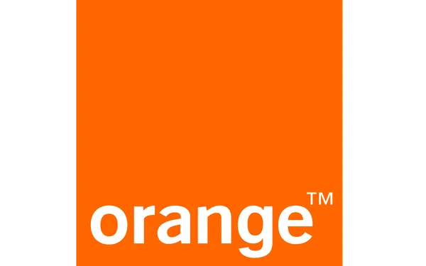

01 / 03
Alternance · Depuis septembre 2025
Pilote d'activité
Orange PPC OI
Dans le cadre de mon BTS SIO SISR, j'effectue mon alternance chez Orange PPC OI en tant que pilote d'activité.
Je vois de l'intérieur comment fonctionne un grand opérateur, au milieu des équipes qui gèrent les infrastructures et les services réseau.
Mon environnement professionnel
- Suivi et coordination des activités.
- Découverte des environnements liés à la fibre optique.
- Observation des activités de supervision.
- Découverte des activités liées au support réseau.
- Développement de mon organisation et de ma communication professionnelle.